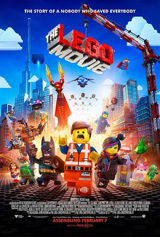

乐高大电影 / The Lego Movie
又名：LEGO英雄传(港) / 乐高玩电影(台) / Lego: The Piece of Resistance
没！字！幕！练了半天听力！！！！等有字幕再重看一遍好了……
作品信息
| 导演 | 菲尔·罗德 / 克里斯托弗·米勒 |
| 编剧 | 菲尔·罗德 / 克里斯托弗·米勒 / 丹·哈格曼 / 凯文·哈格曼 |
| 主演 | 克里斯·帕拉特 / 威尔·法瑞尔 / 伊丽莎白·班克斯 / 威尔·阿奈特 / 连姆·尼森 / 摩根·弗里曼 / 查宁·塔图姆 / 尼克·奥弗曼 / 爱丽森·布里 / 查理·戴 / 乔纳·希尔 / 寇碧·史莫德斯 / 大卫·布伦斯 / 安东尼·丹尼尔斯 / 威尔·福特 / 比利·迪·威廉姆斯 / 基思·弗格森 / 沙奎尔·奥尼尔 / 杰登·桑德 / 戴夫·弗兰科 / 杰克·约翰逊 |
| 类型 | 喜剧 / 动画 / 冒险 |
| 制片国家/地区 | 美国 / 澳大利亚 / 丹麦 |
| 语言 | 英语 |
| 上映日期 | 2014-02-07(美国) |
| 片长 | 100分钟 |
| IMDb | tt1490017 |
最后一次看到是 2026-08-12T21:13:11+08:00 · 豆瓣原页